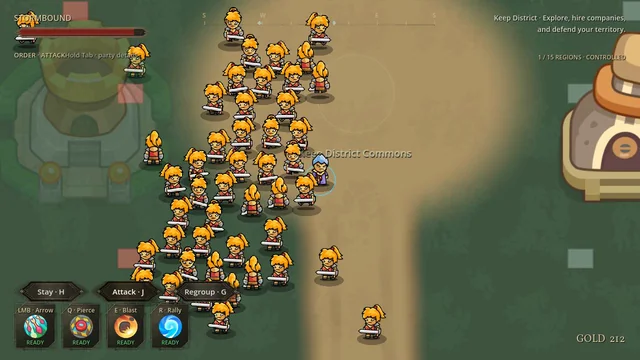
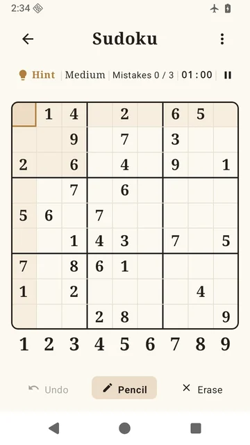
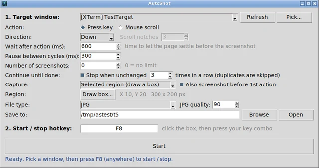

01 · Worlds, Mods & Ports

Goza Games
Original mobile releases, deep simulation mods, autonomous-campaign RPG prototypes, and license-audited open-source preservation.
Goza Interactive is the studio umbrella of Rogie Goza—split intentionally into two divisions so players land directly in games and mods while builders go straight to AI systems and desktop software.


Original mobile releases, deep simulation mods, autonomous-campaign RPG prototypes, and license-audited open-source preservation.

Local-first AI platforms, expressive real-time voice and agent harnesses, portable desktop utilities, and creative production software.
Each project has its own dedicated page and direct distribution or repository links.
A tactile Android Sudoku game built around offline puzzle generation, local history, and optional rewarded hints—no account required.
Portable Windows and Linux desktop utility that steps or scrolls through a window, captures each page cleanly, and stops automatically when content ends.
Mount & Blade II: Bannerlord simulation mod enabling AI lords, companions, and mercenaries to trade town equipment using live economy and skill rules.
Local-first AI platform pairing expressive real-time voice conversation with independent agent execution and adaptive harness research.